The Mission For You Is : ___
2023.01 - 2023.02 @日本・北海道
2025.04 - 2025.12 @フランス、イタリア、ギリシャ
(New!) 2026.10 - @ソウル
100% Individual Project
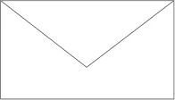
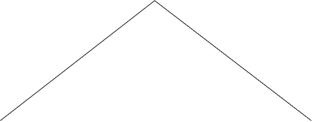
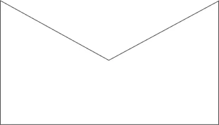
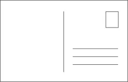
Dear Future Colleague,
あなたは最近、どんな問いを抱えていますか？
その問いを一緒に解いていく同僚が必要ですか？
私は問いから始めて実験をつくり、
人と人がつながる方法を探究してきました。
これから、私が重ねてきた実験を紹介します。
From カン・ミンギョン
◆
観客主導型展示
本、写真、文章、映像、音楽
— さまざまな芸術媒体で4回にわたり行った対話の実験
Question
私たちの対話はどうつながり、どれほど大きくなれるだろう？
Answer
作家がメッセージを伝え、観客が鑑賞する従来の展示構造から離れ、
観客が残した応答が次の観客の応答へとつながる対話の構造を設計
Outcome *
◆
ブランド
旅人が他人の基準ではなく、自分の基準とリズムで
旅を設計できるよう手助けする島旅ブランド
Question
私たちはどうすれば、他人の基準ではなく自分だけの基準で旅ができるだろう？
Answer
旅人が自分の感覚に従って探索し、自ら選択しながら、
自分だけの旅をつくっていける構造を設計
◆
ウェブアプリ
“帰れない長い旅に出るなら、何を持っていくだろう？”
— デジタル時代のいちばん小さな遺産
デジタルの記録を選り分けながら、
自分にとって大切な記憶と基準を発見する。
Question
デジタル時代の遺産とは何か？
Answer
デジタル時代の遺産は物だけでなく、
記憶、人、場所、文章、経験にまで広がりうる。
◆
実験プロジェクト
旅の前に受け取ったミッションと、旅先で出会った人たちのリレーミッションを遂行しながら、
ひとつの物語の網を共同創作する参加型プロジェクト
Question
他者はどうすれば旅の物語に参加できるだろう？
Answer
旅の物語を伝える新しい方法を探究し、
他者の介入を通じて共同で物語をつくっていく経験を設計
Outcome ✱
◆
独立出版 時節集
長い傷と憂鬱を通り抜け、愛とつながりが待つ敷居まで歩んでいく
ひとりの人のか弱い時節を収めた混合ジャンルの独立出版物
Question
創作者はなぜ語りかけるだけで、読者はなぜ聞くだけでなければならないのだろう？
Answer
既存の出版の伝達構造とジャンル中心の出版方式に問いを投げ、
本を読む経験と、作家と読者が交わる方法を新しく設計
Outcome ✱
◆
アルバム＆グッズ
世界と再びつながる瞬間を収めた、感覚ベースの独立出版物
扉を開けて外で出会った人たちと交わした笑い、旅の中で聞いた音、
そして自分がつくり出した音まで、“動きながら生きている瞬間”を
文章ではなく音と写真で記録した。
Question 01
話さずに語る方法はないだろうか？
Answer
前作が内面の物語を記録し、読者とつながる仕掛けを通じて拡張の可能性を実験したとすれば、今作では旅で出会った場面と感情を、言語ではなく感覚の経験として伝え、“物語を経験する方法”を探究した。
Question 02
グッズを買う過程は、どうすれば特別な記憶になれるだろう？
Answer
単なる商品販売ではなく、ひとりのための手紙を手渡す経験を設計
Outcome ✱
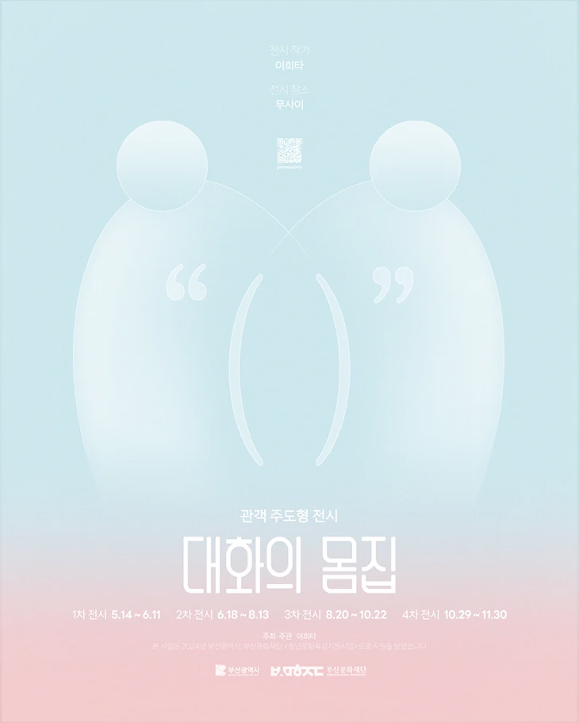
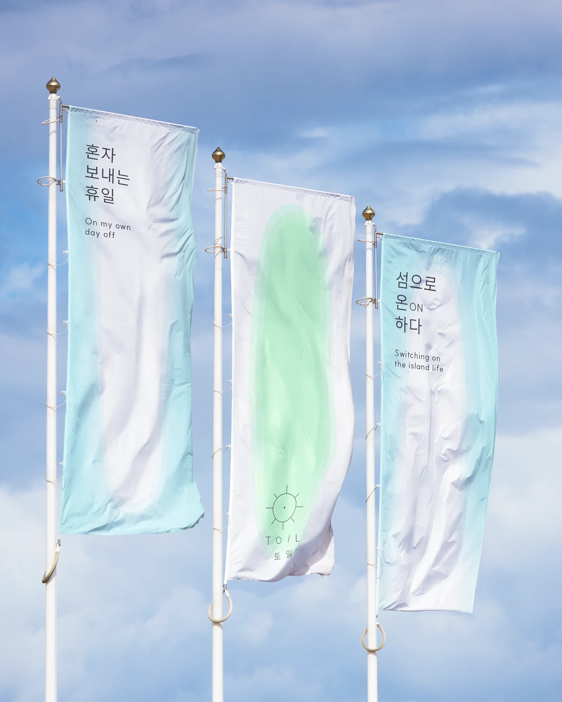
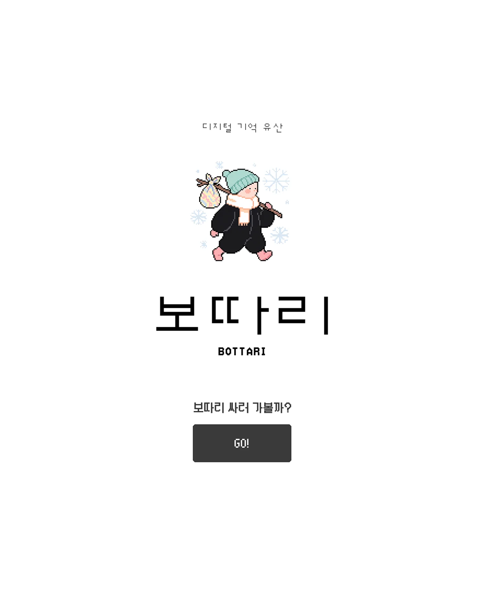
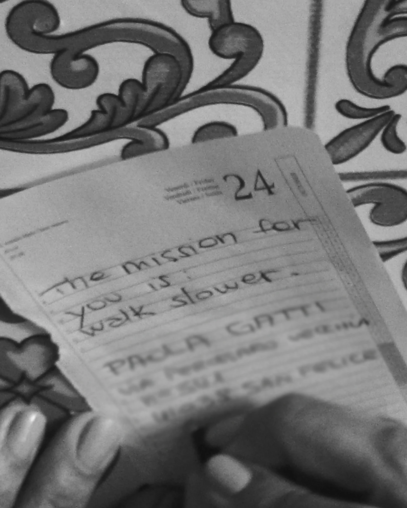
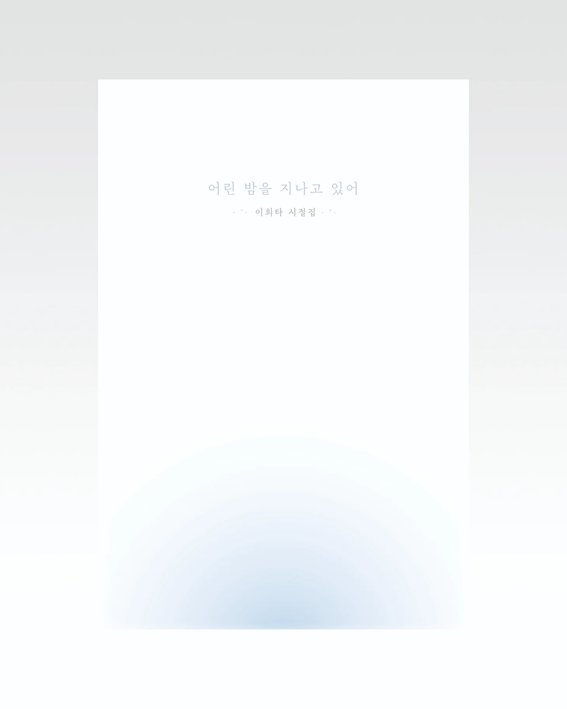
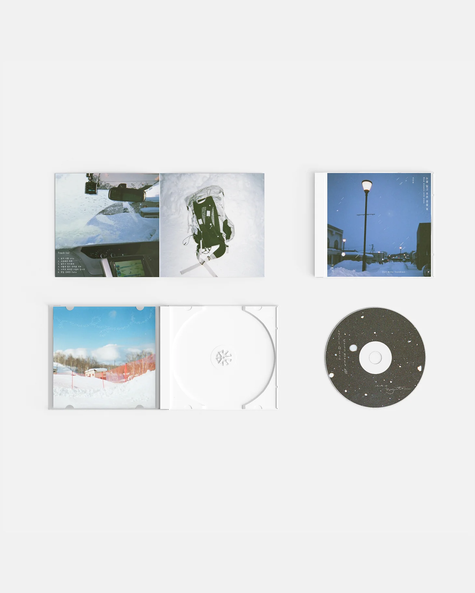
公共支援事業
写真芸術セラピー & 本と文章
CV
DOWNLOAD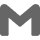
2026.06 - 2026.07トングラミ財団 バイブコーディング深化教育 修了
2026.03 - 2026.07ナレデザイン学院 UI/UXデザイン教育 修了
2021.05 - 2021.08映画の殿堂 ドキュメンタリー制作ワークショップ 修了
2016.03 - 2021.02韓神大学校 文芸創作学科 入学・卒業
2014.02慶南女子高等学校 卒業
2024.05 - 2024.11釜山文化財団 自律企画選定プロジェクト 企画・総括
2022.10 - 2026.09公共機関支援事業プログラム 企画・進行
2022.05独立出版 時節集『幼い夜を過ぎている』刊行
2023.08日本語能力試験 JLPT N5 取得
2013.05フランス語資格 DELF A2 取得
Beyond The CV
: A Backstory
幼い頃、母が占い師に尋ねた。“この子は大きくなったら何になるでしょうか？”
占い師は言った。“海外を我が家のように出入りする運命です。”
母はこれを聞いて、私が外交官になるのだと思ったそうだ。
けれど私は成人するやいなや、生涯貯めたお年玉でひとりバックパック旅行に出た。
大学時代は、休みのたびに旅に出るため図書館に住むように通い、毎学期奨学金を勝ち取った。
三十歳には、三十の記念に無期限の旅に出るという夢も叶えた。
小言が通じないと早くに気づいた母は、そんな私をひそかに心配していたが、
長い旅から帰り、やりたいことができたと言って12年ぶりに朝型人間へ生まれ変わった姿を見て、ついに安心した。
そのときふと思い出した占い師のひとこと。“旅で得てきたヨンガム（霊感）で大物になります。” （韓国語でヨンガムは“おじいさん”の意味もあるけれど、
まさかそっちじゃないよね？）
私はもう母の“痛む指”ではなく、今後の成果が期待される人材として、根を下ろす土地を探している。
Ongoing
Upcoming
Personal Project
Workshop
Personal Project
2023.01 - 2023.02 @日本・北海道
2025.04 - 2025.12 @フランス、イタリア、ギリシャ
(New!) 2026.10 - @ソウル
100% Individual Project
2026.08.05 - 2026.09.09
@複合文化空間ムサイ
釜山図書館 地域書店読書文化プログラム
2026.08.12, 2026.09.09
@無人書店 未知の世界
釜山 - 統営 - 木浦 - 仁川 - ソウル
2026. ?
@韓国
100% Individual Project

★
Case Study 01
Problem
.
Insight
.
Experiment
.
Experience Flow
.
Learning.
Next Question.
★
島旅プラットフォーム
Problem
.
Insight
.
Experiment
.
Experience Flow
.
Learning.
Next Question.

★
ウェブアプリ
Problem
.
Insight
.
Experiment
.
Experience Flow
.
Learning.
Next Question.
★
ミッションプロジェクト
Problem
.
Insight
.
Experiment
.
Experience Flow
.
Learning.
Next Question.
★
独立出版 時節集
Problem
.
Insight
.
Experiment
.
Experience Flow
.
Learning.
Next Question.
★
旅の音集
Problem
.
Insight
.
Experiment
.
Experience Flow
.
Learning.
Next Question.
◆
歩いて、書いて、つくる
写真 & 撮影さんぽ & 文章プログラム
* 写真あそび：写真を使ったさまざまな創作活動
Curriculum
◆
ゲット整理ウィズミー
先延ばしにしてきた本の整理を、一緒にやります。
Curriculum
◆
マウスクラス
自分らしさを発見する写真の授業
Curriculum
◆
文章プログラム
夏をテーマに書く
Curriculum
◆
文章プログラム
来たる冬を想像し、いまの自分の季節を振り返る文章プログラム
Curriculum
◆
写真あそび
私はどんな姿だろう？ 私の魂は、心は？
Curriculum